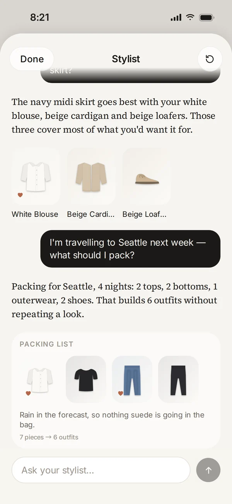
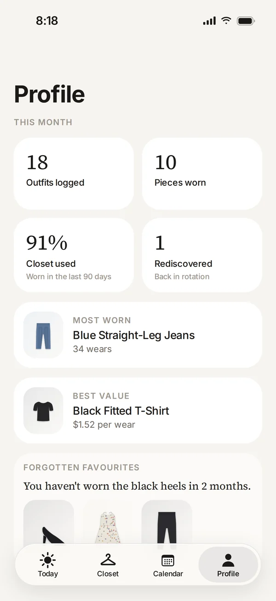

Lifestyle
Wearly
Your daily outfit,
decided.
Wearly is an AI wardrobe stylist that knows what you own, where you're going and what the weather is doing. Photograph your clothes once, and every morning it hands you an outfit built from your own closet — with one plain sentence on why it works.


What it does
Built for one job,
done properly.
01Today
Open it, and you're dressed.
Today reads the whole day before it picks — the forecast from morning to evening and what's on your calendar — then lays out one outfit from your own closet as a flat-lay you can tap to change.
- Warmth is planned across the day: a 61° → 76° day gets a cardigan that comes off by lunch
- A 10:00 meeting and a 6:30 dinner are dressed for with one outfit
- “Why this works” explains every pick in one plain sentence — never a score
- Wear This, Shuffle, More casual, More formal — or tap a piece to swap it or say it's too warm
02Closet
Photograph it once.
Lay a few pieces out and take one photo. Wearly separates each garment, cuts it out and tags it on your iPhone — colour, pattern, fabric, warmth and formality — and you can correct anything it got wrong.
- Camera, multi-select from your photo library, or a mirror selfie
- Search, filter by category, and sort by most or least worn
- Pieces in the laundry are left out of suggestions until they're back
- Every piece keeps its outfit history and what it goes well with
03Calendar
Plan the week in one tap.
Plan My Week drafts an outfit for every day ahead, matched to that day's forecast and plans, and spaces out your favourites so nothing repeats too soon. The night before, tomorrow's outfit is waiting at the top.
- Seven days at a glance, each with its occasion and temperature range
- Try another for any single day, or clear it
- Statement pieces get a longer rest than a plain black tee
- An optional evening reminder with tomorrow's look

04Stylist
Ask in plain words.
Tap the chat bubble to talk to your stylist. Ask what to wear tonight, what goes with a piece you love, or where to start packing — answers come from the same engine as Today, built only from what you own.
- “Make today's outfit more casual” or “Give me three outfits for church”
- Pairing questions answered with pieces from your own closet
- Packing lists: the fewest pieces for the most outfits, with a note on why
- Runs on your iPhone — no account, no sign-up

05Profile
See what you actually wear.
Profile keeps a light, honest read on your wardrobe: outfits logged this month, how much of your closet you've worn in the last 90 days, your most-worn piece, the best value per wear, and the favourites you've forgotten.
- Cost per wear, if you note what a piece cost
- Forgotten favourites nudge pieces back into rotation
- Set your styles, colours and how dressed-up you usually are
- Rate an outfit and the next suggestions follow your feedback
Weather that plans ahead
Too cold is treated as worse than slightly too warm, and when rain is likely Wearly steers you away from suede and toward something with a hood.
Remembers what you loved
Tell it an outfit was too warm, too formal or just right. Feedback fades over time, and combinations you loved come back around.
Private by design
Clothing photos are analysed on your iPhone with Apple Vision. Calendar events are reduced to an occasion — the titles never leave your device.
Privacy at a glance
- Clothing photos are analysed on device and never uploaded
- Calendar events are reduced to an occasion — titles stay on device
- No ads, no third-party trackers
Details
- Category
- Lifestyle
- Requires
- iOS 18 or later. Works with no permissions at all; live weather uses Apple WeatherKit and the calendar is optional.
- Developer
- 4M Studio
- Website
- English · 中文
Support
Questions about Wearly?
Bug reports, feature ideas and privacy questions all go to the same inbox, read by the people who build Wearly.
support.4mstudio@gmail.com